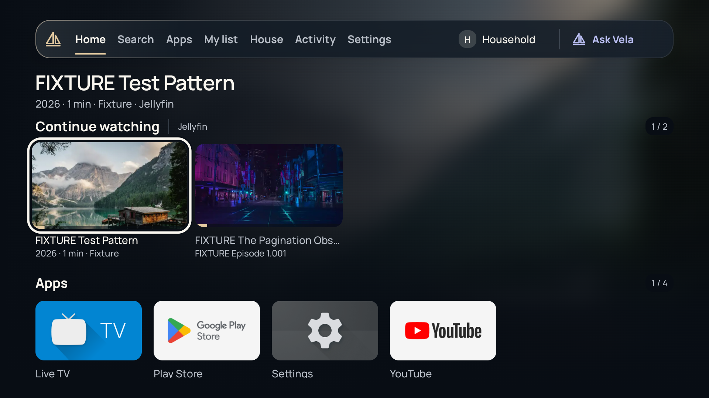
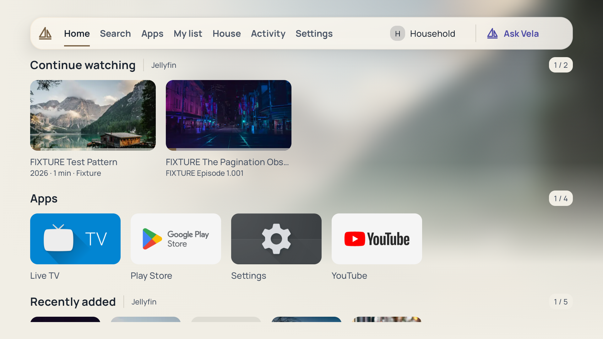
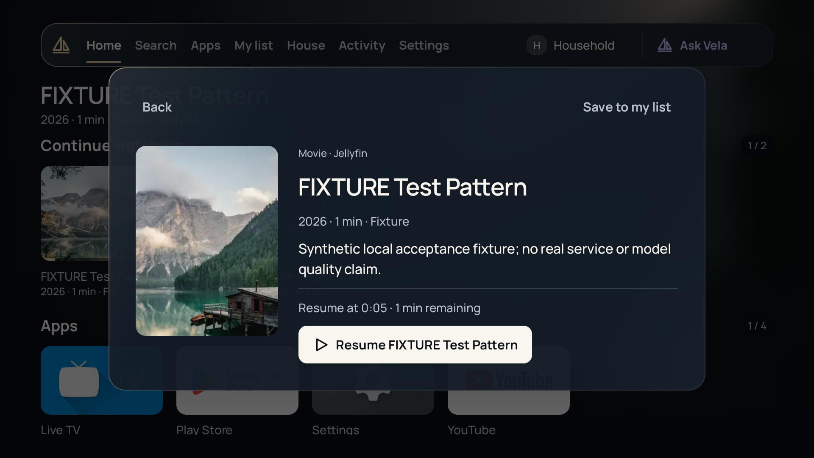
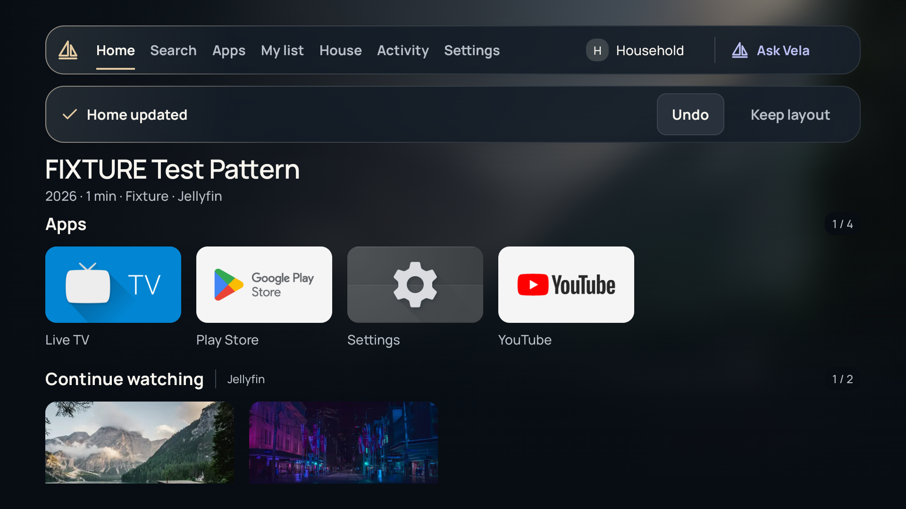
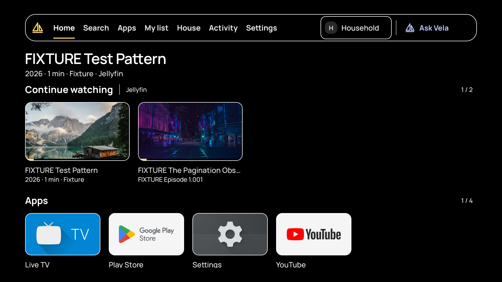
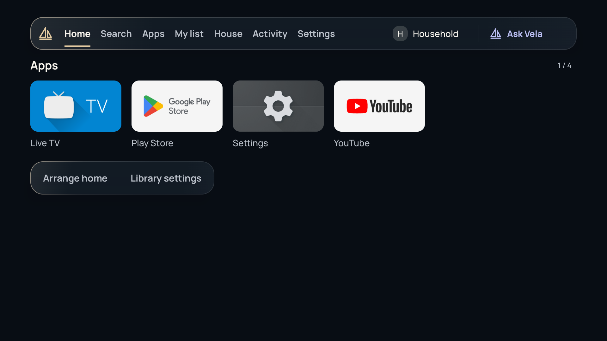
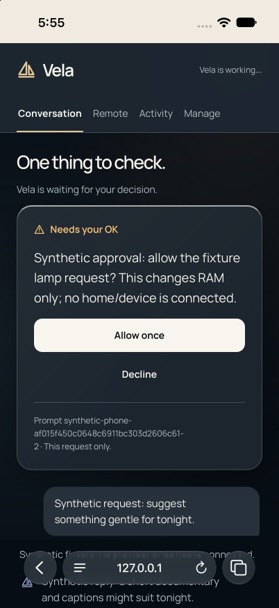
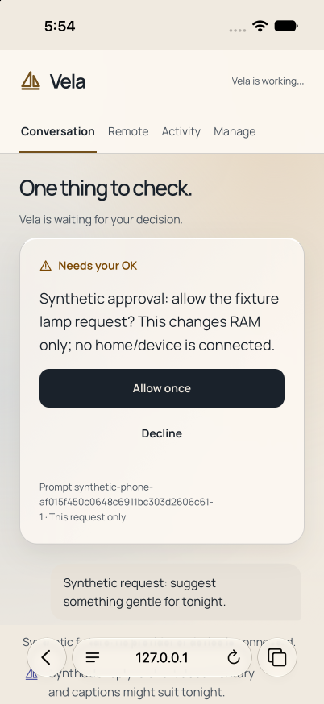
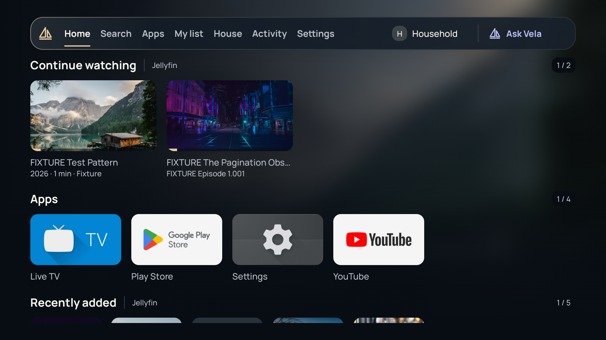
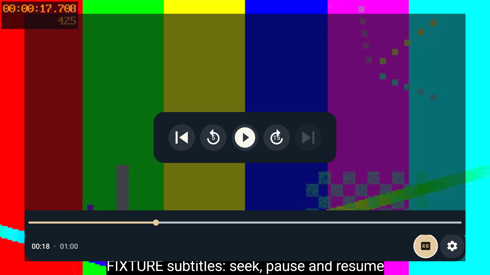

Installed TV app and actual phone companion · local emulator and simulator

Native Android TV. The D-pad selected the first media card; artwork and the independent focus ring remain crisp.

Native Android TV with pearl glass and opaque counter backings. The catalog is labelled synthetic fixture data.The actual Ask activity stays over Home. No model request was submitted.The same native input and controls in the Day material.Native editor, existing Household profile. Save and Back stay visible; no profile changes were saved.Actual Day editor with readable language choices and the existing explicit Save flow.

Loaded native title sheet. The named Resume action uses fixture metadata; playback was subsequently verified with the generated local clip.

Actual native row move. Activating Undo subsequently restored the exact previous layout JSON.

Actual native opaque fallback. High contrast and Reduced motion were enabled from TV Settings, then restored.

Actual native Home after the original settings were restored and the fixture connection removed.

Actual production phone.html in iPhone Simulator Safari, with synthetic HTTP responses. Decline cleared the exact fixture prompt.

The same actual page in Day. This fixture is separate from the Android approval broker.

Native Android TV with no current media focus. Content rows keep the available viewport.

Actual native player with the generated local test clip paused after observed playback. No hardware or DRM qualification is implied.
Unmodified captures. Synthetic media and phone data; no physical Shield use. These frames show the implementation, not the earlier HTML concepts.